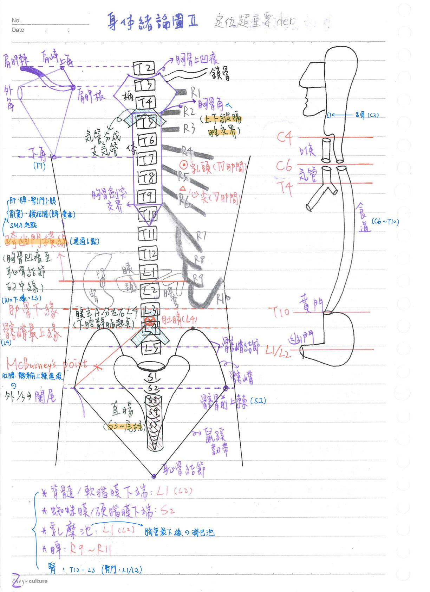
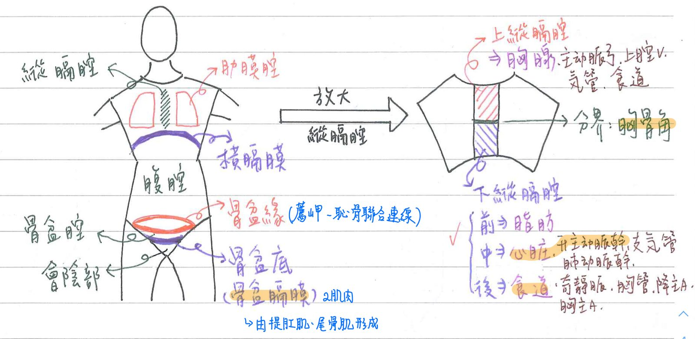
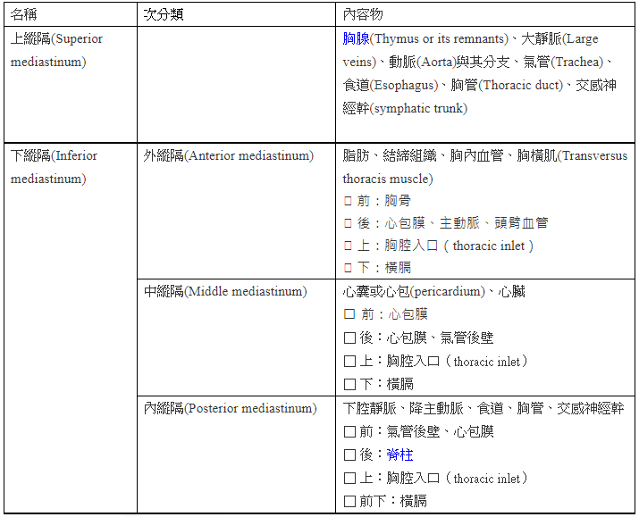
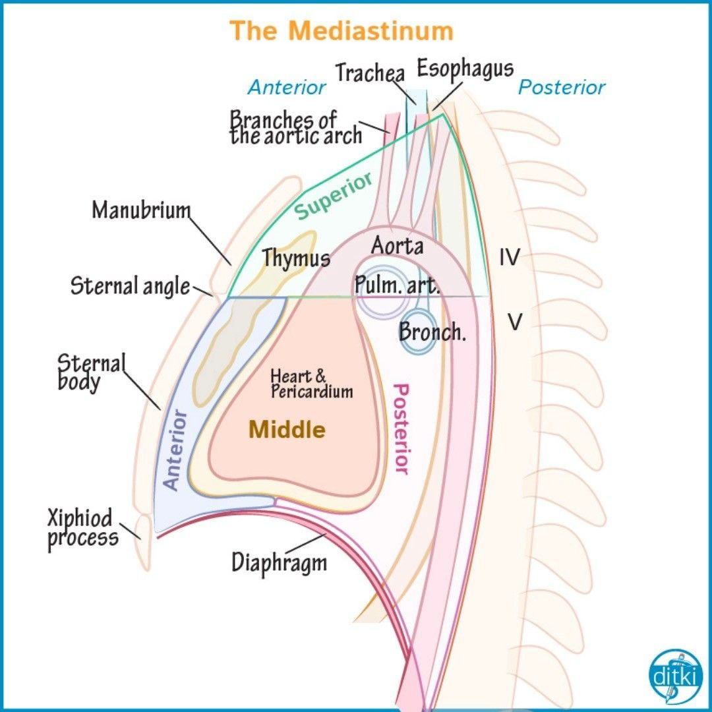
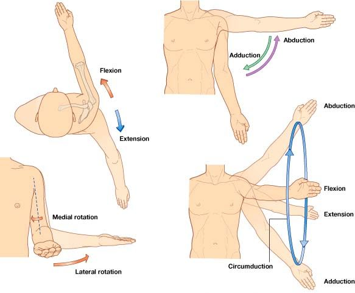

🙅🏻♂️ 人體界標(surface landmark)、縱膈、解剖動作名詞
軀幹界標(surface landmark)&體表投射
軀幹界標(surface landmark)
- 胸骨上凹痕(suprasternal notch)=★頸靜脈切跡(jugular notch)：T2/T3
- ★胸骨角(sternal angle)：胸骨體&胸骨柄交界—>T4/T5
(R2高度、上下縱膈腔交界、氣管分成左右支氣管)
- ★★★★劍胸關節(xiphisternal joint)：胸骨體&劍突交界—>T9/T10
(國考題：成人站立時：T8/T9 or T9)- 體表投射點意義：心臟下緣；肝臟上界
- ★★跨幽門橫線(transpyloric line)：胸骨上凹痕至恥骨結節的中線(軀幹的正中線)→L1/L2
經過之內臟：腎臟(腎門)、肝臟(下緣)、胰臟(胰頭/胰體)、胃(胃竇)、脾臟(下緣)、橫結腸(脾小彎)
- 肋骨下緣(subcostal)：R10下緣—>L3
- ★★橫肚臍面(transumbilical plane)：L3/L4
- ★髂嵴最上緣(supracristal)：L4(腹主動脈終點、下腔靜脈起點)
★腰椎穿刺處：L3/L4或L4/L5
- ★腸骨嵴間面(intercristal)：L4
備註
99~101有出現這個名詞，各版本解剖textbook好像都沒有QQ
- 髂嵴結節：L5
- 髂骨前、後上棘：S2
- 恥骨結節(pubic tubercle)：鼠蹊韌帶→連接髂骨前上棘&恥骨結節
體表投射(每年必考)
- ★(男性)乳頭：第四肋間(R4-R5)
- ★心尖：第五肋間(R5-R6)
- 肩胛骨：T2-T7或R2-R7
- 肩峰：T2
- ★肩胛根(肩胛棘內側端)：T3
- ★★下角：T7
- 腎臟：T12~L3(腎門：L1/L2) <cf.>腎動脈於L2分出
- 舌骨：C3
- 喉：C4-C6
- ★環狀軟骨：C6
- ★[110-2]氣管：位於C6-T4(下緣)
- ★食道：C6-T10
- ★★脊髓/軟腦膜下端：L1(or L2)
- 蜘蛛膜/硬腦膜下端：S2
- ★[110-1]乳糜池(胸管最下緣之淋巴池)：L1(or L2)
- 直腸：S3-Co
- ★直腸-乙狀結腸交接處：S3
- 脾：R9-R11
- ★McBurney's point：肚臍至髂前上棘連線之外1/3，闌尾底

縱膈(mediastinum)

- 上縱膈：★★[109-1]胸腺、氣管、食道、胸管、交感神經幹
- ★[110-2]由前到後的順序：頭臂V、主動脈弓、氣管、食道(最後方)
- 下縱膈：
- 前下縱膈：脂肪
- 中下縱膈：心臟、升主A、肺動脈幹、支氣管
- 後下縱膈：★★[109-1]胸主A、降主A、★胸管、奇V、★食道、交感神經幹


解剖動作名詞
- ★circumduction

📖 書本補充：與筆記不同或筆記沒寫到的地方
⚠️
以下為對照書本後整理，筆記原文未更動。標「筆記 vs 書」的是兩邊寫法不同、建議回頭確認的地方。
身體的參考平面（p.105）
- 筆記 vs 書：跨幽門平面（transpyloric）的定義，筆記寫「胸骨上凹痕至恥骨結節的中線 → L1/L2」；書上寫胸骨柄上緣與恥骨聯合連線的中點所作的橫平面，高度L1。
- 跨幽門平面經過的構造，書上列：幽門（躺著時）、膽囊底、胰臟頸、腸繫膜上動脈與門靜脈的起點、橫結腸及腎門。筆記有列脾臟下緣，書上沒有；考題 109-1-25 也以「脾門不在幽門平面上」為答案（脾在腎上方）。
- 肋下平面（subcostal）：第10肋軟骨下緣，L3，是腹部9 區的上橫平面。
- 橫臍平面（transumbilical）：L3/L4 椎間盤，把腹腔分成4 個象限。
- 嵴上平面（supracristal）：髂嵴最高點，L4 棘突；腰椎穿刺位置、腹主動脈分成總髂動脈的高度。
- 橫胸平面（transverse thoracic）：通過胸骨角，T4/T5 椎間盤；分開上、下縱隔，也是氣管分叉處。
- 橫結節平面（transtubercular）：橫越髂嵴結節，L5，是腹部 9 區的下橫平面。
- 筆記 vs 書：髂前上棘高度，筆記寫「髂骨前、後上棘：S2」；書上「棘間平面（interspinous，通過兩側 ASIS）」寫S1，位於橫結節平面下方。
- 筆記備註說「腸骨嵴間面（intercristal）」找不到出處；書上沒有把它列為獨立平面，但 101-2-9 考題選項有出現。
- 書的提示：特別注意橫幽門、橫臍及嵴上平面。
動作的類型（p.107）
- 內收／外展的中軸：手指以第 3 指、腳趾以第 2 趾為中軸。
- 迴轉（circumduction）＝屈曲、伸展、內收、外展的組合，在空間中畫出圓錐；旋轉則畫出圓柱。
- 旋前／旋後：尺骨與橈骨之間的運動，手掌面向後＝旋前、向前＝旋後。
- 右手內旋＝逆時鐘、左手內旋＝順時鐘；外旋則相反。
- 其他書上列的名詞：對掌（拇指碰同手其他指尖）、背屈／蹠屈（提起與下壓足部）、前突／回縮（無角度的前後運動）。
縱隔的分區（p.169–170）
- 上縱隔：上胸腔入口 → 橫胸平面（胸骨角到 T4–T5）。內含：上腔靜脈、頭臂靜脈、主動脈弓、胸管、食道、氣管、迷走神經、膈神經、胸腺。筆記列的上縱隔內容少了上腔V、頭臂V、主動脈弓、迷走N、膈N。
- 前縱隔：胸骨後面到心包膜之間；含胸腺（下延的部分）、疏鬆結締組織、淋巴結、脂肪及胸骨心包韌帶。
- 中縱隔：心包膜內，主要是心臟及其發出的大血管。
- 後縱隔：心包膜後面到後胸壁；含胸主動脈、食道、奇和半奇靜脈、迷走神經、胸管、交感神經鏈及內臟神經（splanchnic nerves）。
- 書的提示：
- 橫胸平面也通過氣管分叉（carina）。
- 胸腺主要在上縱隔，但可能往下延伸到前縱隔上方。
- 通過上縱隔的構造，許多會繼續進入後縱隔（書上圖 33 標示氣管、食道、交感神經鏈「通過上和後縱隔」）。
- 106-2-23 解析補充神經走向：右、左喉返神經分別繞過右鎖骨下動脈及動脈韌帶；右膈神經位於上腔靜脈與縱膈胸膜之間；左膈神經沿纖維性心包膜下行。
後縱隔的三條縱走構造（p.191–192）
- 相對位置：胸主動脈在左、胸管在中、奇靜脈在右。
- 胸管起自 L1–L2 椎骨前方的乳糜池，注入左內頸V與鎖骨下V交界（靜脈角）；右上象限的淋巴由右淋巴導管收集。
- 這一節的其他考題（支氣管動脈、主動脈分支、乳房淋巴、乳糜池匯入的淋巴幹）屬於血管／淋巴的範圍，這裡只收和縱隔位置、乳糜池高度直接相關的兩題。
📝 書中歷屆考題（點選答案作答）
104-2-25p.106
左右髂骨嵴 (iliac crest) 最高點的水平連線通過下列何者的棘突 (spinous process)？
💡 嵴上平面＝L4 棘突。
101-2-9p.106
通過第三及第四腰椎間的椎間盤平面為：
109-1-25p.106
下列何者不在幽門平面 (transpyloric plane) 上？
💡 脾臟位在腎臟（最高約 T12）的上方，不可能通過 L1 的幽門平面。
107-1-24p.171
下列何者不屬縱隔 (mediastinum) 構造？
💡 肺臟在縱隔左右兩側的肺腔內。
101-2-28p.171
青春期前，大部分的胸腺位在下列何處？
109-1-23p.171
胸腺 (thymus) 主要位於：
106-2-23p.171
有關上縱膈 (superior mediastinum) 內，神經走向之敘述，下列何者正確？
💡 右喉返繞右鎖骨下A、左喉返繞動脈韌帶；左膈神經沿纖維性心包膜下行。
110-2-23p.171
上縱膈 (superior mediastinum) 內之構造，由前往後之順序，下列何者正確？
💡 食道一定最後、氣管在它前方；頭臂靜脈又在主動脈弓的淺層。
104-2-12p.192
在後縱隔腔 (posterior mediastinum) 中段處 ①胸主動脈 (thoracic aorta) ②奇靜脈 (azygos vein) ③胸管 (thoracic duct) 三者，由左至右排列的順序為：
💡 主動脈左、胸管中、奇靜脈右。
110-1-8p.193
乳糜池 (cisterna chyli) 約在下列哪個椎骨的高度？
💡 書上寫乳糜池位在 L1 及 L2 椎骨前方。